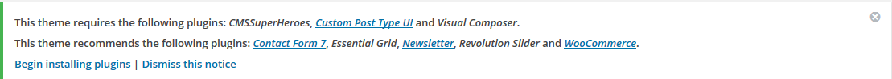
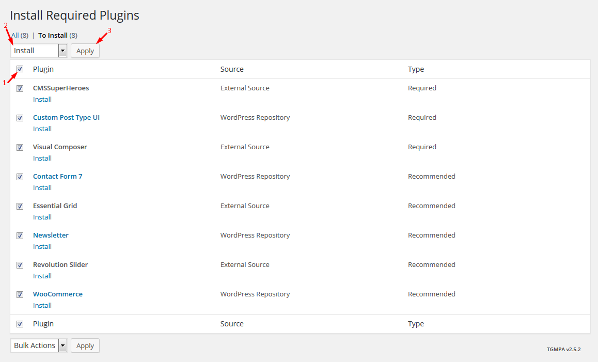
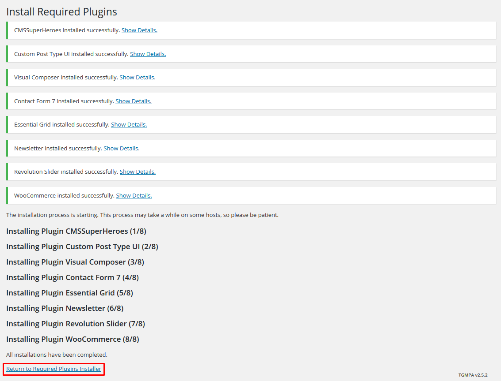
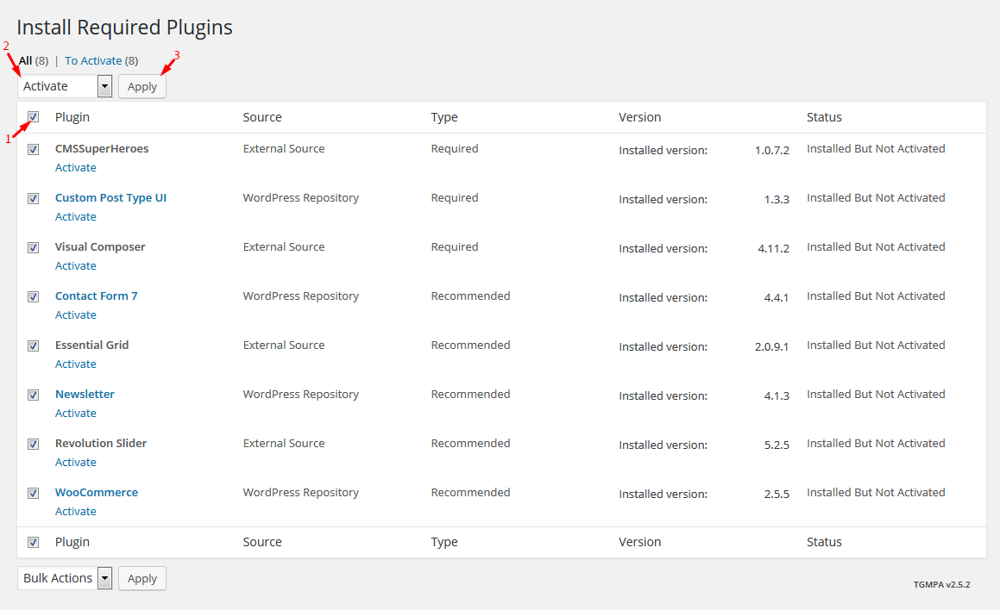
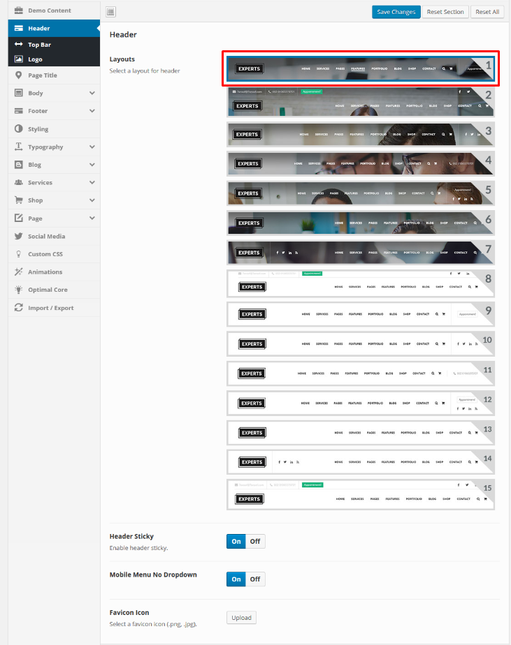
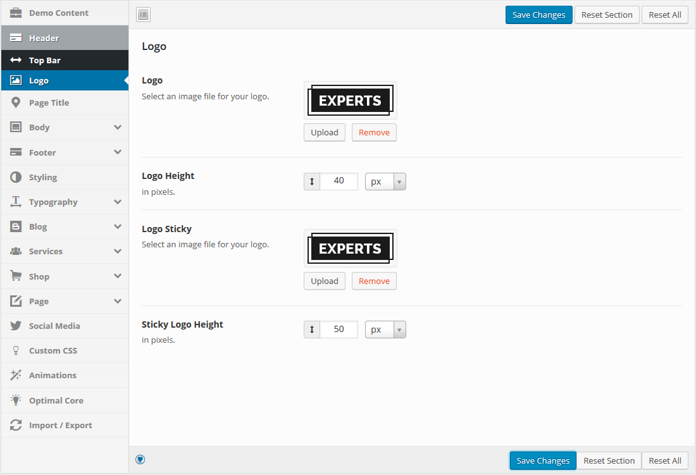

- First Steps
- Demo Data
- Plugins
- Menu
- Pages
- Widgets
- Theme Options
- Shortcode
- Translation
- SEO
- Update our theme
- Support
First Steps
-
Get Started
First, thank you for purchasing our theme!
This guide provides instructions for installation, help on getting started and extensive documentation of features. It is recommended you read it thoroughly to fully leverage the Experts theme's capabilities. Please also make sure to check out our Video Tutorials as they explain everything covered in here in greater depth. We hope you enjoy building with Experts as much as we enjoyed developing it and continue to develop with new features!

-
Installing WordPress
Before beginning the installation and configuring of your new theme, you must first have WordPress already installed on a server.
If you are struggling, here is a very detailed guide at Wordpress Codex that will walk you through every step.
If you prefer something more visual, you can watch this video tutorial on how to install Wordpress by us
(Please note the video shown is from our NUVO Restaurant theme, but the same process applies)
-
Installing The Theme
Once you have setup a copy of WordPress, there are two ways you can go about installing the theme:
- 1. FTP Upload
Unzip the download and upload the theme directory /Experts/ into your WordPress themes directory /wp-content/themes/.
- 2. WordPress Upload
This is definitely the easier route for most. Simply navigate to Appearance > Add New Themes > Upload. Click the 'browse' button and locate the still zipped theme folder. The theme will be uploaded and installed in a matter of seconds.
Here is our video tutorial to help you through the process
(Please note the video shown is from our NUVO Restaurant theme, but the same process applies)
After you have installed the theme successfully, you can optionally import the supplied dummy data in order to get a feel for things. If you're interested in importing the data, pleave check the Demo Data section below
- 1. FTP Upload
-
Installing plugins required
Once you have installed and activated our theme you will be prompted to install required and recommended plugins. Just click the link to begin installing plugins.
Next, check boxes to select all the plugins you want to install, select the bulk action of install from the dropdown box and then click the button to apply.
Select the plugins you had installed, and then apply the bulk action to activate them.
Finally, you will got a confirmation notice that your plugins were activeded.

Demo Data
-
One-click Importer
Noted: Before you install our themes please read some our tips here:
- How to install sample data using one click in CMS theme
- How to install sample data using import xml method
To help you set up website with the least efforts, we include in the theme package dummy content file. After installing it, all content seen on the live demo will be imported except for images/videos.
There are two methods you can use, one is using our One-click Importer, the other is Importing manually. To go with the former option, please follow the steps below:
- 1. Go to Experts on the left menu
- 2. Click on Main Options, the Demo Content menu tab will show.
- 3. Just click Import now and wait for the process to complete.
- 4. After the importation is finished, Save Changes and you are done.
To set Import demo-data For your page , you must be done some tasks. Please watch video below for detail:
Now you have a website just like our demo, with the pictures replaced by grey images.
-
Manual Importing
To imprort the demo content by yourself, please follow the steps below:
- 1. Go to Tools > Import.
- 2. Select Wordpress system then browse for the .xml file. You shoud be able to find it following the path wp_Experts > demo-data > experts > content > XML.
- 3. You will be asked to map the authors in this export file to users on the blog. For each author, you may choose to map to an existing user on the blog or to create a new user.
- 4. You will then have the choice to import attachments, so click on the "Download and import file attachments" box.
- 5. Click Submit.
Now you have a website just like our demo, with the pictures replaced by grey images.
Plugins
-
Custom Post Type UI
This is plugin required all our themes
This plugin provides an easy to use interface to create and administer custom post types and taxonomies in WordPress. This plugin is created for WordPress 3.x.
If you need dedicated support for this plugin, please visit: Custom Post Type UI
-
Visual Composer
After installation, you will be suggested to install additional plugins. To install them and activate, please navigate to Plugins, you will see a list of required and optional plugins.We recommend that you install the following to get the best of our theme:
Visual Composer is the most popular drag and drop editor for wordpress.
If you need dedicated support for this component, please visit: Visual Composer on Code Canyon
- Revolution Slider
Create a responsive (mobile friendly) or fullwidth slider with must-see-effects and meanwhile keep or build your SEO optimization (all content always readable for search engines). See the heaps of custom transitions/animations for each object on the page!
Customize this slider with our convenient drag & drop backend to your very needs. This plugin features tons of unique transition effects, an image preloader, video embedding, autoplay that stops on user interaction and lots of easy to set options to create your own effects.
For premium support with this plugin please visit: Revolution Slider on Code Canyon
- Contact Form 7
Contact Form 7 is one of the most popular form builders for wordpress.
We have created styles ready for you to use within your Experts theme.
For detailed inforamtion and support on this plugin, please go to: https://wordpress.org/plugins/contact-form-7/
- Newsletter
Newsletter is a real newsletter system for your WordPress blog: perfect for list building, you can easily create, send and track e-mails, headache-free.
It just works out of box!
For detailed inforamtion and support on this plugin, please go to: https://wordpress.org/plugins/newsletter/
- WooCommerce
Woo Commerce is one of the most popular shopping cart plugins for wordpress.
For detailed inforamtion and support on this plugin, please go to: http://wordpress.org/plugins/woocommerce/
- SoundCloud Shortcode
This plugin converts all SoundCloud Shortcodes into embeddable SoundCloud players. It works for any SoundCloud track, playlist, user, or group.
Once you install this plugin, it works for any of your blog posts.
For detailed inforamtion and support on this plugin, please go to: https://wordpress.org/plugins/soundcloud-shortcode/
Menu
-
Creating Menu
- 1. From the 'Appearance' menu on the left-hand side of the Dashboard, select the 'Menus' option to bring up the Menu Editor.
- 2. Select Create a new menu at the top of the page
- 3. Enter a name for your new menu in the Menu Name box.
- 4. Click the Create Menu button.
- 5. Click Select to select menu created.
Your new custom menu has been defined.
-
Adding Items to a Menu
You can add different link types into your menu, these are split between panes left of the menu you're currently editing.
- 1. Locate the pane entitled Pages.
- 2. Within this pane, select the View All link to bring up a list of all the currently published Pages on your site.
- 3. Select the Pages that you want to add by clicking the checkbox next to each Page's title.
- 4. Click the Add to Menu button located at the bottom of this pane to add your selection(s) to the menu that you created in the previous step.
- 5. Click the Save Menu button once you've added all the menu items you want.
Your custom menu has now been saved.
-
Creating Multi-level Menus
When planning the structure of your menu, it helps to think of each menu item as a heading in a formal report document. In a formal report, main section headings (Level 1 headings) are the nearest to the left of the page; sub-section headings (Level 2 headings) are indented slightly further to the right; any other subordinate headings (Level 3, 4, etc) within the same section are indented even further to the right.
The WordPress menu editor allows you to create multi-level menus using a simple 'drag and drop' interface. Drag menu items up or down to change their order of appearance in the menu. Drag menu items left or right in order to create sub-levels within your menu.
To make one menu item a subordinate of another, you need to position the 'child' underneath its 'parent' and then drag it slightly to the right.
- 1. Position the mouse over the 'child' menu item.
- 2. Whilst holding the left mouse button, drag it to the right.
- 3. Release the mouse button.
- 4. Repeat these steps for each sub-menu item.
- 5. Click the Save Menu button in the Menu Editor to save your changes.

-
Adding Your Menu to Your Site
- 1. Scroll to the bottom of the menu editor window.
- 2. In the section titled Theme locations, click the check box for the location where you want your menu to appear.
- 3. Click Save menu once you've made your selection.
Congratulations! Your menu has now been added to your site.
- Manager Menu Locations
Pages
-
Page options
With the Page Options specially built for our themes, you can easily customize the Layout, Header, Footer and Page Title of every page.
You can also set your page to One Page.
Header
- Custom: Enable/Disable custom style mode.
- Custom Footer: Enable/Disable custom style mode.
- 1. Install Widget Data - Setting Import/Export plugin.
- 2. Import file widget.json
- Speed: You can set moving speed here.
- Easing: Allow you setting moving effect.
To set One Page for your page, you must be done some tasks. Please watch video below for detail:

Result:
Page Title
Custom: Enable/Disable custom style mode.
You can give a Title and Sub-title to the page here. You can also change the Background image...
Result:
Sidebar
Show Sidebar: Enable/Disable custom style mode.
Show Sidebar Left - Default Sidebar Right: Enable/Disable custom style mode.
Result:
Footer
Let choose the Footer Layout suitable for you here.
Result:
Notice: If your page had not shown any widget, please do 2 steps :
One Page
- Home Page
-
Gallery, Pricing and Product.
Gallery,Pricing and Product are created using Shortcodes. For more detailed instruction, please head to Shortcode > CMS Carousel
-
Service, Clients, Teams ,Posts and Testimonials.
Service , Clients, Teams,Posts and Testimonials are created using Shortcodes. For more detailed instruction, please head to Shortcode >CMS Grid
Widgets
-
Adding Widgets to Sidebar
To Add Widget on Sidebar, please following these steps:
- 1. Navigate to Appearance>Widgets to access the list of widgets and widget section that they can be added. The left hand side show all widgets you can use. The right hand side shows all different section you can add widgets to.
- 2. Simply drag and drop the widget you want into the widgets section you want to the right hand side.
- 3. When you finished, you can visit the site to see results.
Theme Options
-
Theme Option Overview
The options panel is home to all of the theme's extensive configuration options. To view the panel, click on WP Experts in the left-hand menu. Here you have the ability to alter many core aspects that make up how your theme looks and behaves. Any of the options that have some ambiguity to them conviently have descriptions to explain their purpose.
With our built-in importer, you will be able to get your site ready in a flash. Simply select a layout and click Import now to start importing demo data.
-
Header
This is one of most important sections for theme because this is what users see first. With our Theme Options, you will find various options to configure Header, including changing Layout (multiple layouts not available in Experts though), You also find configuration options for Sticky Menu here.
- Layout: You can select layout for header.
- Top Bar
-
Logo
Set Up Logo
You can select an image file in your library or upload a new file from your computer to set as logo. Follow the steps below to set up your logo:
- 1. Go to WP Experts > Header > Logo.
- 2. To set logo, cick Upload.
- 3. If you already had the logo image in your media library, simply click on it then choose Select at the bottom right. If not, switch to Upload files tab then browse for the file in your computer. After it is uploaded to your library, click on it then Select. 
- 4. You can scale the logo up and down by changing Logo Height. Note that Logo Height is limited by Header Height, if you want to enlarge the logo, you must increase Header Height as well.
Your logo will appear on the Header as below:
Sticky Logo
If you enable Sticky Menu, the menu will resize smaller and stick at the top of the screen as you scroll down, hence the size of the logo will change accordingly. Sticky Logo Height option allows you to change its size on sticky menu.
-
Page Title
Page Title
Layout: Select layout to show.
Select Background Image: Select background image in library.
Page Title Padding: Enter number padding.
Result:
- Body
Body
Here you can set up layout for all pages. Turning on Boxed Layout will change all page layouts from full width to boxed. You can change the layout of each page individually using Page Options. You can also customize the body's Background, Margin and Padding.
Result:
- Page Loadding
Here you can turn on/off to show Page Loadding.
After select turn on, reload page to see result.

- Footer
Footer Layout
Let choose the Footer Layout suitable for you here.
Result:
Notice: If your page had not shown any widget, please do 2 steps:
- 1. Install Widget Data - Setting Import/Export plugin.
- 2. Import file widget.json
Feature
you need to fill in part Heading,Column.
Result:
Don't forget to Save Changes when you are done.
Social
you need to fill in part Heading,Column
Result:
Don't forget to Save Changes when you are done.
- Styling
- Typography
Typography
Not just color, all text elements are also within your control. Define the style of Body text and H1 to H6 Headlines yourself.
Result:
Result H1:
Extra Fonts
On this section, Experts theme had some available fonts for you. If you want to set a special font for a special class, you only need to insert your class into Selector section, and choose the font that you want on the Font dropdown box. Finally, you click Save changes and see your result, all completed.
Example:
1. Copy class you want change.
2. Select Font Family, Font Weight & Style and paste class on Selector section.
Result:
- Blog
- Page Title
ClosePage Title
Select Background Image: Select background image in library - apply services single.
Result:
- Shop
- 404
- Social Media
- Custom CSS
- Animations
- Optimal Core
- Import/Export
This section is especially for all those who want to move settings from theme options panel between themes or when you move your website from test server to live. Please always remember to click "Save Changes" button. Without that you will lose all your changes.

Shortcode
-
Adding Shortcode in Visual Composer
Visual Composer is a powerful Wordpress page builder that allows you to create complex page layouts without touching a single line of code. To switch to Visual Composer's Backend Editor, click on this button:

When Visual Composer's editing pane comes up, click on either of these buttons to Add Element.
A shortcode selecting panel will show up, you can see all the shortcode available in the theme. Select the one you would like to use.
You will then encounter a setting panel for the shortcode (each shortcode has it own setting options), after a bit of configuration, it will show up nicely on your page.
- CMS Heading
-
CMS Single Fancy Box
- Title: Enter title of fancy icons box.
- Description: Enter Description for single fancy box.
- Content Align: You can choose the type of display Default, Left, Right and Center.
- Icon Library: Select libraries available.
- Title Item: Enter title of item.
- Content Item: Enter content of item.

- Button type: Select button.
- Link: Enter link for the button.
- Text: Enter text for single fancy box
- Shortcode Template: You can select display style.
-
CMS Counter Single
- Title : Enter title of your counter single.
- Description: Enter description for your counter.
- Content Align: You can choose the type of display Default, Left, Right and Center.
- Select Number Cols: Choose number columns for your counter.
- Title Counter 1: Enter title for your counter.
- Counter Type: You can choose the starting number of the counter between Zero and Random.
- Icon Counter 1: Choose a icon for your counter.
- Digit 1: Enter the number value of your counter.
- Suffix 1: Enter the suffix, for instance %.
- Prefix 1: Enter the prefix, for instance $.
- Shortcode Template: Choose a file for the counter.
-
CMS Progress Bar
- Mode: Choose between Horizontal and Vertical.
- Item Title: Enter title for progress bar.
- Icon Library: Select libraries available.
- Icon: Select an icon for your progress bar.
- Show Value: Choose "Yes" to show the value number in progress bar.
- Value: Enter the value of progress bar.
- Value suffix: Insert text to specify the progress value. For example: %

- Background Color Bar: Select a color for progress background.
- Progress Color: Select a color for progress bar.
- Width: Set the width of the progress bar either in pixel or in percentage.
- Height: Set the height of the progress bar either in pixel or in percentage.
- Border Radius: Enter a value for border radius. The bigger the value, the rounder the progress border.
- Striped: Select show striped or not show.

- Shortcode Template: Choose a layout to show for the Progress Bar.
-
CMS Button
- Text on the button: Enter text on the button.
- Link button: Select url for the button.
- Icon library: Select icon library.
- Icon item: Select icon from library.
- Icon Align: You can select icon align left or right.
- Button style: Select button style.
- Button size: Select button size.
- Button Duplicated: Select yes/no to show button duplicated.
-
CMS Call To Action
- Call to action Title: Enter title for call to action.
- Description: Enter Description for call to action.
- Color: Set color for description and Title.
- Button Text: Enter text for the button.
- Button Link: Enter link for the button.
- Icon Library: Select libraries available.
- Icon Item: Select icon from library.
- Icon Align: You can choose the type of display Default, Left, Right and Center.
- Button Style: Select a style to show for the button.
- Button Size: Select a size to show for the button.
- Shortcode Template: Select your heading template.
-
CMS Grid
Gallery
- 1. To display gallery in a page, first you need to create gallery items. Go to Gallery > Add new.
- 2. Enter gallery name in Title field. Enter gallery content in the content section.
- 3. Select a Category for gallery on Categories section. Create more Category by enter name categories, then clicking Add New Gallery Category .
- 4. Set gallery's picture by choosing a Set featured image.
- 5. Finally, Publish.
- Result:
After creating Gallery items, it's time to display them in a page using CMS Grid shortcode.
- Source: Click on Build Query more options will show up.

- Post types: Set Post Types as gallery.
- Post count: Limit the number gallery to display in grid by entering Post Count number.
- Order by: Select how to sort retrieved posts.
- Sort order: Designates the ascending or descending order.
- Layout Type: Select layout style to show.
- Columns Devices: Select the number of columns displayed.
- Shortcode Template: Choose a layout to show for the gallery.
- Result:
Pricing
- 1. To display pricing in a page, first you need to create pricing items. Go to Pricing > Add new.
- 2. Enter pricing name in Title field.
- 3. Select a Category for pricing on Categories section. Create more Category by clicking Add New Category Pricing.
- 4. Enter the options for the data field.
- 5. Finally, Publish.
- Result:

After creating pricing items, it's time to display them in a page using CMS Grid shortcode.
- Source: Click on Build Query more options will show up.
- Post types: Set Post Types as our pricing.
- Post count: Limit the number pricing to display in grid by entering Post Count number.
- Order by: Select how to sort retrieved posts.
- Sort order: Designates the ascending or descending order.
- Layout Type: Select layout style to show.
- Columns Devices: Select the number of columns displayed.
- Shortcode Template: Choose a layout to show for the pricing.
- Result:
Product
- 1. To display Product in a page, first you need to create product items. Go to Product > Add Product.
- 2. Enter the product's name in Title field. Enter Product content in the content section.
- 3. Select a Category for your product. Create more Category by clicking Add New Product Category.
- 4. You can add a Tags new for your product.Create more tags by enter name tags, then clicking Add .
- 5. Set product's profile picture by choosing a Featured Image.
- 6. Finally, Publish.
- Result:
- 1. Go to Page > Add New.
- 2. Using Visual Composer, choose Add Element.
- 3. Select CMS Grid.
- Source: Click on Build Query more options will show up.
- Post types: Set Post Types as product.
- Post count: Limit the number of product to display in grid by entering Post Count number.
- Order by: Select how to sort retrieved posts.
- Sort order: Designates the ascending or descending order.
- Layout Type: Select layout type to show.
- Columns Devices: Set product number show on screens.
- Shortcode Template: Choose a file to show for the product.
- Result:
After creating product items, it's time to display them in a page using CMS Grid shortcode.
-
CMS Carousel
Services
- 1. To display a service, first you need to create services items. Go to Services > Add new.
- 2. Enter the name in Title field. Add some Description in the content section if you want.
- 3. Select a Services Category for service on Categories section. Create more Category by enter name categories, then clicking Choose from the most used Services Category .
- 4. Set service's picture by choosing a Set featured image.
- 5. Finally, Publish.
- Result:
- 1. Go to Page > Add New.
- 2. Using Visual Composer, choose Add Element.
- 3. Select CMS Carousel.
After creating services items, it's time to display them in a page using CMS Carousel shortcode.
- Source: Click on Build Query more options will show up.
- Post types: Set Post Types as Services.
- Post count: Limit the number services to display in carousel by entering Post Count number.
- Order by: Select how to sort retrieved posts.
- Sort order: Designates the ascending or descending order.
- Devices: Select the number of columns displayed.
- Margin Items: Set space between items.
- Shortcode Template: Choose a layout to show for the services.
- Result:
Testimonials
- 1. To display Testimonials in a page, first you need to create testimonial items. Go to Testimonials > Add new.


- 2. Enter the testimonial's name in Title field. Enter Testimonal content in the content section.
- 3. Select a Category for your testimonial. Create more Category by clicking Add New Categories Testimonial.
- 4. Set testimonial's profile picture by choosing a Featured Image.
- 5. Enter Testimonial Position for testimonial .
- 6. Finally, Publish.
- Result:

- 1. Go to Page > Add New.
- 2. Using Visual Composer, choose Add Element.
- 3. Select CMS Carousel.
- Source: Click on Build Query more options will show up.
- Post types: Set Post Types as testimonial.
- Post count: Limit the number of testimonials to display in carousel by entering Post Count number.
- Order by: Select how to sort retrieved posts.
- Sort order: Designates the ascending or descending order.
- Devices: Select item quantity shown on screens.
- Margin Items: Set space between items.
- Shortcode Template: Choose a file to show for testimonial.
- Result:
After creating testimonials items, it's time to display them in a page using CMS Carousel shortcode.
Clients
- 1. To display clients in a page, first you need to create clients items. Go to Clients > Add new.
- 2. Enter the vets's name in Title field.
- 3. Set vets's picture by choosing a Set featured image.
- 4. Select a Category for clients. Create more Category by clicking Add New Client Categories.
- 5. Finally, Publish.
- Result:
- 1. Go to Page > Add New.
- 2. Using Visual Composer, choose Add Element.
- 3. Select CMS Carousel.
- Source: Click on Build Query more options will show up.
- Post types: Set Post Types as clients.
- Post count: Limit the number of clients to display in carousel by entering Post Count number.
- Order by: Select how to sort retrieved posts.
- Sort order: Designates the ascending or descending order.
- Devices: Select item quantity shown on screens.
- Margin Items: Set space between items.
- Shortcode Template: Choose a style to show for clients.
- Result:

After creating clients items, it's time to display them in a page using CMS Carousel shortcode.
Posts
- 1. To display Posts in a page, first you need to create posts items. Go to Posts > Add new.

- 2. Enter Posts name in Title field. Enter posts content in the content section.
- 3. Select a Category for posts on Categories section. Create more Category by clicking Add New Category.
- 4. Set posts's picture by choosing a Set featured image.
- 5. Finally, Publish.
- Result:
After creating posts items, it to display them in a page using CMS Carousel shortcode.
- Source: Click on Build Query more options will show up.
- Post types: Set Post Types as posts.
- Post count: Limit the number posts to display in carousel by entering Post Count number.
- Order by: Select how to sort retrieved posts.
- Sort order: Designates the ascending or descending order.
- Devices: Select item quantity shown on screens.
- Margin Items: Set space between items.
- Smart Speed: Speed scroll of each item.
- Icon library: Select icon library.
- Prev Icon: Select icon from library.
- Shortcode Template: Choose a layout to show for the posts.
- Result:
Teams
- 1. To display a teams profile, first you need to create member profile items. Go to Teams > Add new.
- 2. Enter the member name in Title field. Add some Description in the content section if you want.
- 3. Select a Category for your member. Create more Category by clicking Add New Categories Teams.
- 4. Set member's profile picture by choosing a Featured Image.
- 5. Finally, Publish.
- Result:
- 1. Go to Page > Add New.
- 2. Using Visual Composer, choose Add Element.
- 3. Select CMS Carousel.
- Source: Click on Build Query more options will show up.
- Post types: Set Post Types as teams.
- Post count: Limit the number member to display in carousel by entering Post Count number.
- Order by: Select how to sort retrieved posts.
- Sort order: Designates the ascending or descending order.
- Devices: Select item quantity shown on screens.
- Margin Items: Set space between items.
- Smart Speed: Speed scroll of each item.
- Icon library: Select icon library.
- Prev Icon: Select icon from library.
- Shortcode Template: Choose a file to show for the teams.
- Result:
After creating several member profile items, it's time to display them in a page using CMS Carousel shortcode.
-
CMS Google Map
CMS Google Map allows embedding a google map in Experts style.
- Address: Enter address of Map.
- Click Show Info window: Click a marker and show info window .
- Coordinate: Enter coordinate of Map .
- Marker Coordinate: To pin the marker on your location, enter Latitude, Longtitude in Marker Coordinate field.
- Marker Title: Enter title of Marker .
- Marker Description: Enter the description for Marker .
- Marker Icon: Select icon for Marker.
- Info Window Max Width: Set width for info window.
- Map Type: Select the map type.
- Style Template: Select your heading size for title .
- Zoom: Enter zoom level of map.
- Width: Enter width for Map.
- Height: Enter height for Map.
- CMS Countdown
Translation
-
Translating the theme
The theme is compatible with WPML plugin, thus can be translated into multiple languages. Follow this link for guide. You can also use POEdit plugin for translation.
- 1. Located the .po and .mo files in folder /languages.
- 2. Select language in admin options.
- 3. Find language prefix (save option and reload front-end view html).
- 2. Copy two file .po & .mo and rename to eg( en_CA.mo & en_CA.po ... ) same for other languages .
- 3. Open the file .po with POEdit and translate the texts into your preferred language.
- 4. When complete, you’ll want to save the file twice, as two separate files – a .po file and a .mo file. When you save the files, you must name them according to your language code. Find a list of language codes at WordPress in your Language. As an example, the language code for English is en_EN, so you would save the translated files as en_EN.po first, then en_EN.mo.
- 5. When that’s done, simply upload the files to your theme folder.
SEO
-
SEO
Our themes are optimized by with H1, H2, H3, H4, H5 tags, clean code, HTML5 but if you want to get higher ranking on search engines, you must need some help from SEO plugins and Google Pagespeed Service:
UPDATE OUR THEMES
-
UPDATE OUR THEMES
You can update our theme using some ways bellow
1. Update theme using Envato WordPress Toolkit
or
2. You can update manual theme
If you have any troubles while using auto update ( It is likely to be a permissions issue ) then you may want to manually update the theme via FTP or Cpanel.
Download the latest version of the theme on ThemeForest download page and simply replace with the old one via FTP or Cpanel.
Support
-
Support
The team at CMSSuperheroes are always happy to help you with any questions or recommendations you have about the Experts theme. If you need any help or support please contact us through the TF Messaging system or
direct at Email: support@cmssuperheroes.com
direct at Forum: here if you got any problem about purchase code when fill to our forum please How to fill purchase code here
- Body
- Contact Form 7

{kind=link}
{kind=link}
{kind=link}
{kind=link}
{kind=link}
{kind=link}
{kind=link}
{kind=link}
{kind=link}
{kind=link}
{kind=link}
{kind=link}
{kind=link}
{kind=link}
{kind=link}
{kind=link}
{kind=link}
{kind=link}
{kind=link}
{kind=link}
{kind=link}
{kind=link}
{kind=link}
{kind=link}
{kind=link}
{kind=link}
{kind=link}
{kind=link}
{kind=link}
{kind=link}
{kind=link}
{kind=link}
{kind=link}
{kind=link}
{kind=link}
{kind=link}
{kind=link}
{kind=link}
{kind=link}
{kind=link}
{kind=link}
{kind=link}
{kind=link}
{kind=link}
{kind=link}
{kind=link}
{kind=link}
{kind=link}
{kind=link}
{kind=link}
{kind=link}
{kind=link}
{kind=link}
{kind=link}
{kind=link}
{kind=link}
{kind=link}
{kind=link}
{kind=link}
{kind=link}
{kind=link}
{kind=link}
{kind=link}
{kind=link}
{kind=link}
{kind=link}
{kind=link}
{kind=link}
{kind=link}
{kind=link}
{kind=link}
{kind=link}
{kind=link}
{kind=link}
{kind=link}
{kind=link}
{kind=link}
{kind=link}
{kind=link}
{kind=link}
{kind=link}
{kind=link}
{kind=link}
{kind=link}
{kind=link}
{kind=link}
{kind=link}
{kind=link}
{kind=link}
{kind=link}
{kind=link}
{kind=link}
{kind=link}
{kind=link}
{kind=link}
{kind=link}
{kind=link}
{kind=link}
{kind=link}
{kind=link}
{kind=link}
{kind=link}
{kind=link}
{kind=link}
{kind=link}
{kind=link}
{kind=link}
{kind=link}
{kind=link}
{kind=link}
{kind=link}
{kind=link}
{kind=link}
{kind=link}
{kind=link}
{kind=link}
{kind=link}
{kind=link}
{kind=link}
{kind=link}
{kind=link}
{kind=link}
{kind=link}
{kind=link}
{kind=link}
{kind=link}
{kind=link}
{kind=link}
{kind=link}
{kind=link}
{kind=link}
{kind=link}
{kind=link}
{kind=link}
{kind=link}
{kind=link}
{kind=link}
{kind=link}
{kind=link}
{kind=link}
{kind=link}
{kind=link}
{kind=link}
{kind=link}
{kind=link}
{kind=link}
{kind=link}
{kind=link}
{kind=link}
{kind=link}
{kind=link}
{kind=link}
{kind=link}
{kind=link}
{kind=link}
{kind=link}
{kind=link}
{kind=link}
{kind=link}
{kind=link}
{kind=link}
{kind=link}
{kind=link}
{kind=link}
{kind=link}
{kind=link}
{kind=link}
{kind=link}